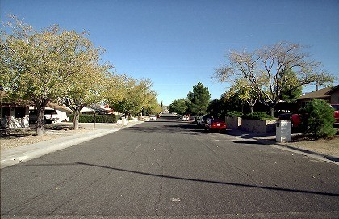
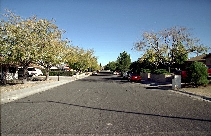
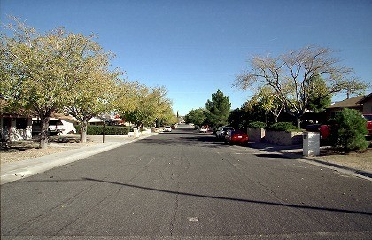
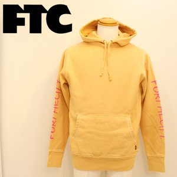
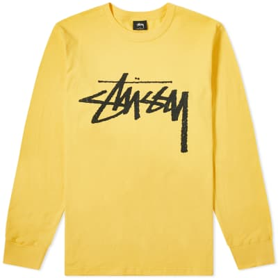
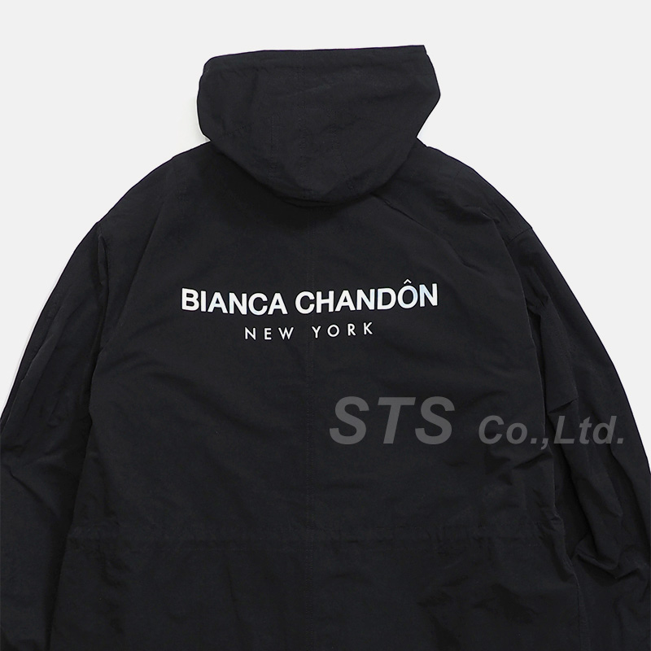

THRASHER is a skateboard magazine from the state of San Francisco, USA in 1981, and an original fashion brand. As the popularity of skating has risen, it has established itself as a leading figure driving the skate culture.
THRASHR's official youtube shows videos of pro skaters sponsored by THARASHR
He is a skateboard youtuber who was originally active in the United States. When he came to Japan, He became interested in Japan, and he would like to work in Japan. Besides the video on youtube, there is also an apparel brand called ERASED, and Japanese anime characters and Japanese are used for design.
Recomend video for Skate
top new
 Ten-year-old Sky Brown took her first significant step towards becoming Britain’s youngest summer Olympian by winning the gold medal at the National Skateboarding Championships in Salford.
Brown, whose win will earn her qualifying points towards reaching the Games in Tokyo next year, proved a cut above her domestic competitors as she scored 308 points over two runs in the women’s park competition.
Inevitably bold Brown continues to attract much of the attention of sports that will make its debut at Tokyo Games along with surfing, climbing and karate.

A four-year-old skateboarder has died after being hit by a van in Surrey. The child, who has not been identified, was knocked over by a Mercedes Sprinter on a quiet residential road in Oxted. Emergency services, including paramedics and the air ambulance attended the scene at around 10.40am on Sunday. The youngster was taken to North East Surrey Hospital in Redhill, but was pronounced dead at 12.05pm.
Ten-year-old Sky Brown took her first significant step towards becoming Britain’s youngest summer Olympian by winning the gold medal at the National Skateboarding Championships in Salford.
Brown, whose win will earn her qualifying points towards reaching the Games in Tokyo next year, proved a cut above her domestic competitors as she scored 308 points over two runs in the women’s park competition.
Inevitably bold Brown continues to attract much of the attention of sports that will make its debut at Tokyo Games along with surfing, climbing and karate.

A four-year-old skateboarder has died after being hit by a van in Surrey. The child, who has not been identified, was knocked over by a Mercedes Sprinter on a quiet residential road in Oxted. Emergency services, including paramedics and the air ambulance attended the scene at around 10.40am on Sunday. The youngster was taken to North East Surrey Hospital in Redhill, but was pronounced dead at 12.05pm.
Ten-year-old Sky Brown took her first significant step towards becoming Britain’s youngest summer Olympian by winning the gold medal at the National Skateboarding Championships in Salford.
Brown, whose win will earn her qualifying points towards reaching the Games in Tokyo next year, proved a cut above her domestic competitors as she scored 308 points over two runs in the women’s park competition.
Inevitably bold Brown continues to attract much of the attention of sports that will make its debut at Tokyo Games along with surfing, climbing and karate.

A four-year-old skateboarder has died after being hit by a van in Surrey. The child, who has not been identified, was knocked over by a Mercedes Sprinter on a quiet residential road in Oxted. Emergency services, including paramedics and the air ambulance attended the scene at around 10.40am on Sunday. The youngster was taken to North East Surrey Hospital in Redhill, but was pronounced dead at 12.05pm.
popular bland

Brand name is from the initial of "FAMILY = family, TRUST = trust, COMMITMENT = responsibility". Pioneer-like brand of skater style. It is often compared to the Supreme on the east coast and the FTC on the west coast.

Founded by Sean Stussy, who was a surfboard shaper. A variety of original fonts that had a major impact on the fashion world, and created many follower brands.

A street brand "BIANCA CHANDON" launched by "Alex Olson " who is a son of the legendary skater "Steve Olson"